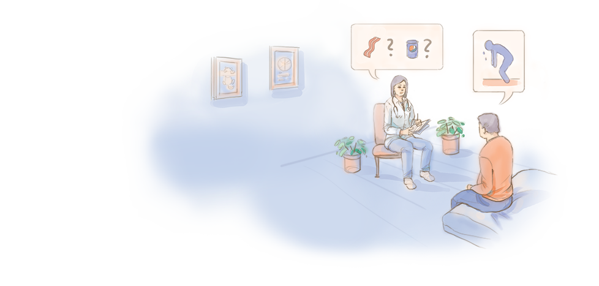
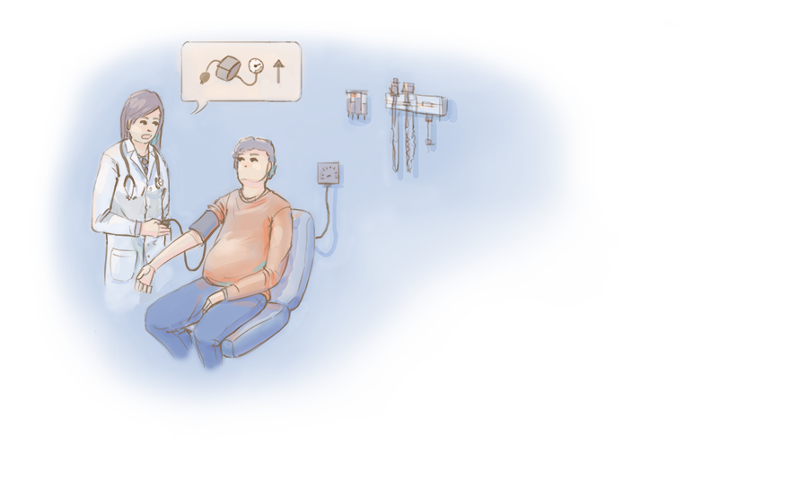
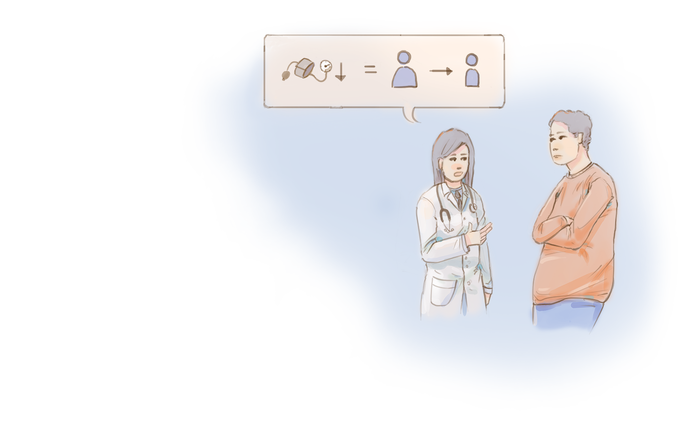
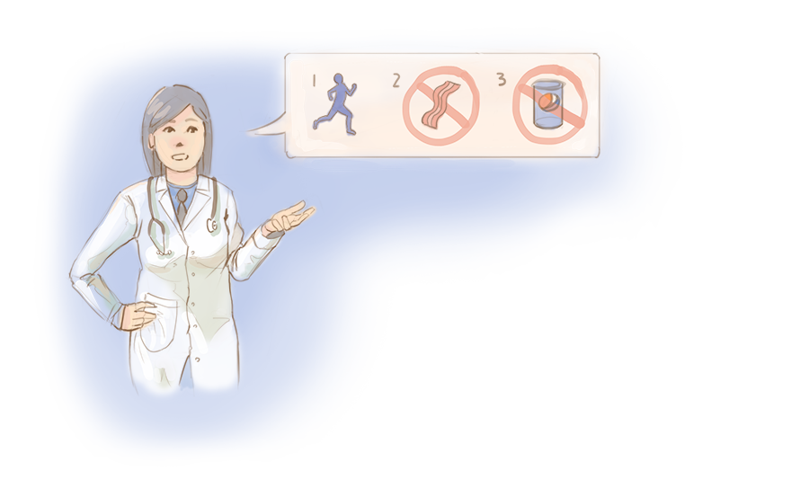
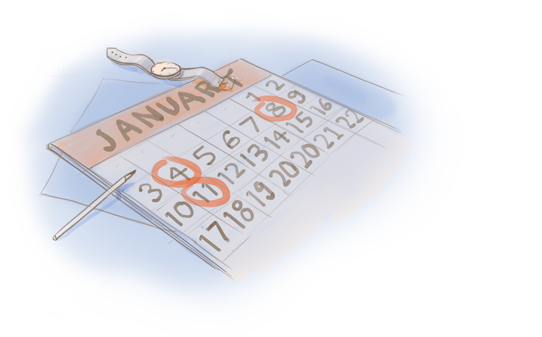
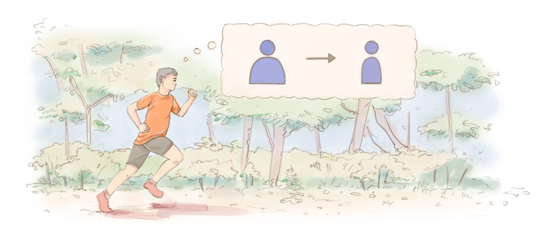
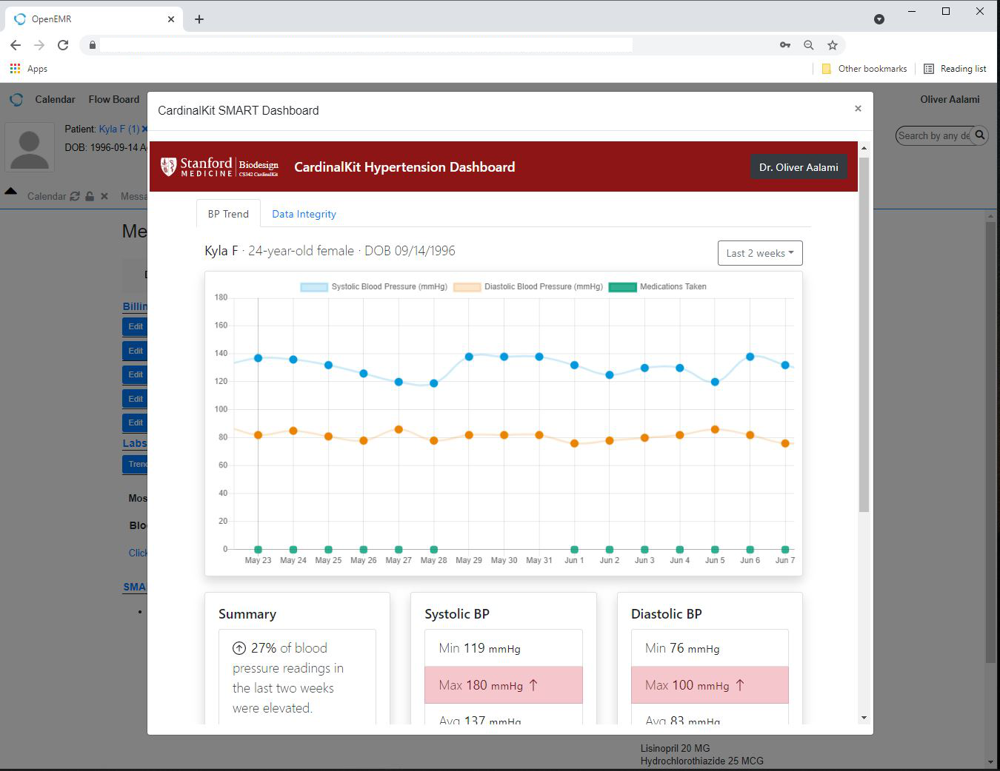

Plan Prevención Hipertensión Arterial
Es el principal factor de riesgo para el desarrollo de Enfermedad Cardiovascular
Afecta entre 20-40% de la población de Latinoamerica
¿Cómo funciona?
Promovemos la detección mediante el control para mantener los valores de presión arterial por debajo de 140/90 mmHg en forma sostenida!
Historia Clínica Electrónica
Interacción con los profesionales de la salud que estimulan cambios en el estilo de vida relacionados con Actividad Física y nutrición!
Adicionalmente se almacenan datos demográficos, signos vitales, antecedentes de condiciones de salud, equipos de salud, entre otros!
Control de la Presión Arterial [Presencial o Virtual]
Controles por profesionales de la salud y controles domiciliares con dispositivos digitales validados son 2 opciones posibles
Peso Corporal
La medida más efectiva para mejorar los valores de presión arterial elevadas es bajar de peso
Recomendaciones específicas
Evitar bebidas azucaradas [Bebibas cola o jugos de frutas comerciales], Reducir Sal, comer menos grasas TRANS y Aumentar los minutos de Actividad Física
Acompañamiento familiar
Los planes óptimos funcionan mejor cuando se involucra cada uno de los integrantes del grupo familiar y acompañan todas las estrategias propuestas!
Gestor de Bienestar
Contínuamente un especialista lo acompañará en cada una de las etapas, para lograr alcanzar su propósito y objetivo de bienestar!
Motivamos y acompañamos la adquisición de hábitos y estilos de vida!
La evidencia demostró que los hábitos se mantienen luego de 90 días de adquisición!
DATOS OMS
- La presión arterial alta igual o por encima de 140/90 mmHg es hipertensión.
- La hipertensión es el principal factor de riesgo para muertes por enfermedades cardiovasculares.
- Las enfermedades cardiovasculares son la principal causa de muerte en la mayoría de los países de las Américas.
- Un alto consumo de sal, bajo consumo de frutas y vegetales, uso nocivo del alcohol e inactividad física son los principales factores de riesgo para tener hipertensión.
Info para Profesionales
